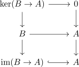
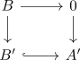

quasi-abelian category of pairs
Definition
Let $\mathcal{A}, \mathcal{B}$ be abelian categories where $\mathcal{A} \subseteq \mathcal{B}$ is a full subcategory closed under subobjects and quotient
Then the quasi-abelian category of pairs $\mathcal{E}_{\mathcal{A}, \mathcal{B}}$ is defined as full subcategory of
where for $Y \rightarrow X$
- the map is a monomorphism
- $Y \in \mathcal{A}$
- $X/Y \in \mathcal{A}$
proof quasiabelian
using torsion pair is quasiabelian we want to show that $\mathcal{E}_{\mathcal{A}, \mathcal{B}}$ is the torsion-free part of a torsion pair.
Here we use inclusion of B into C_A,B, inclusion of category of pairs into C_A,B.
quotient
Let $B \rightarrow A$ be any morphism. Then there exists a short exact sequence

where one can check, that all conditions are fullfilled.
contractible hom
Any morphism $B \rightarrow 0, B' \hookrightarrow A'$ has to let

commute, which is only possible for the zero morphism.